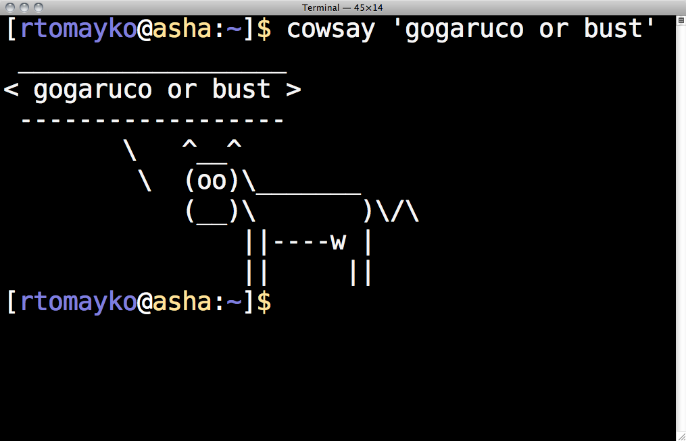

_____ _
/__ \ |__ ___
/ /\/ '_ \ / _ \
/ / | | | | __/
\/ |_| |_|\___|
__ _ _ _ _ _
/ _\ |__ ___| | | /\ /\__ _| |_ ___ _ __( )__
\ \| '_ \ / _ \ | | / /_/ / _` | __/ _ \ '__|/ __|
_\ \ | | | __/ | | / __ / (_| | || __/ | \__ \
\__/_| |_|\___|_|_| \/ /_/ \__,_|\__\___|_| |___/
_ _ _
/\ /\__ _ _ __ __| | |__ ___ ___ | | __
/ /_/ / _` | '_ \ / _` | '_ \ / _ \ / _ \| |/ /
/ __ / (_| | | | | (_| | |_) | (_) | (_) | <
\/ /_/ \__,_|_| |_|\__,_|_.__/ \___/ \___/|_|\_\



#!/bin/sh
# Usage: hello <name>
name="$1"
if [ "$name" = "world" ]
then
echo "you're so cliché"
else
echo "hello $name"
fi#!/bin/sh
# Usage: hello <name>
name="$1"
if [ "$name" = "world" -a "$LOGNAME" != "boss" ]
then
echo "you're so cliché"
else
echo "hello $name"
fi#!/bin/sh
# Usage: hello <name>
name="$1"
if [ "$name" = "world" -a "$LOGNAME" != "boss" ] ||
[ `hostname` = "mordor" ]
then
echo "you're so cliché"
else
echo "hello $name"
fi#!/bin/sh
# Usage: hello <name>
name="$1"
if [ "$name" = "world" -a "$LOGNAME" != "boss" ] ||
[ `hostname` = "mordor" ]
then
echo "you're so cliché"
elif [ -z "$name" ]
then
echo "Usage: hello <name>"
false
else
echo "hello $name"
fi#!/bin/sh
# Usage: hello <name>
name="$1"
if [ "$name" = "world" -a "$LOGNAME" != "boss" ] ||
[ `hostname` = "mordor" ]
then
echo "you're so cliché"
elif [ -z "$name" ] && grep -q "^$name:" /etc/passwd
then
echo "Usage: hello <name>"
false
else
echo "hello $name"
fi$ man if
No manual entry for if
$ man if
BUILTIN(1) BSD General Commands Manual BUILTIN(1)
NAME
builtin, !, %, ., :, @, {, }, alias, alloc, bg, bind, bindkey, break,
breaksw, builtins, case, cd, chdir, command, complete, continue, default,
dirs, do, done, echo, echotc, elif, else, end, endif, endsw, esac, eval,
exec, exit, export, false, fc, fg, filetest, fi, for, foreach, getopts,
glob, goto, hash, hashstat, history, hup, if, jobid, jobs, kill, limit,
local, log, login, logout, ls-F, nice, nohup, notify, onintr, popd,
printenv, pushd, pwd, read, readonly, rehash, repeat, return, sched, set,
setenv, settc, setty, setvar, shift, source, stop, suspend, switch,
telltc, test, then, time, times, trap, true, type, ulimit, umask,
unalias, uncomplete, unhash, unlimit, unset, unsetenv, until, wait,
where, which, while -- shell built-in commands
SYNOPSIS
builtin [-options] [args ...]
DESCRIPTION
Shell builtin commands are commands that can be executed within the run-
ning shell's process. Note that, in the case of csh(1) builtin commands,
the command is executed in a subshell if it occurs as any component of a
pipeline except the last.
If a command specified to the shell contains a slash ``/'', the shell
will not execute a builtin command, even if the last component of the
specified command matches the name of a builtin command. Thus, while
specifying ``echo'' causes a builtin command to be executed under shells
that support the echo builtin command, specifying ``/bin/echo'' or
``./echo'' does not.
While some builtin commands may exist in more than one shell, their oper-
ation may be different under each shell which supports them. Below is a
table which lists shell builtin commands, the standard shells that sup-
port them and whether they exist as standalone utilities.
...
$ help if
if: if COMMANDS; then COMMANDS;
[ elif COMMANDS; then COMMANDS; ]...
[ else COMMANDS; ]
fi
The `if COMMANDS' list is executed. If its exit status is zero, then the
`then COMMANDS' list is executed. Otherwise, each `elif COMMANDS' list is
executed in turn, and if its exit status is zero, the corresponding
`then COMMANDS' list is executed and the if command completes. Otherwise,
the `else COMMANDS' list is executed, if present. The exit status of the
entire construct is the exit status of the last command executed, or zero
if no condition tested true.
$ man [
TEST(1) BSD General Commands Manual TEST(1)
NAME
test, [ -- condition evaluation utility
SYNOPSIS
test expression
[ expression ]
DESCRIPTION
The test utility evaluates the expression and, if it
evaluates to true, returns a zero (true) exit status;
otherwise it returns 1 (false). If there is no
expression, test also returns 1 (false).
All operators and flags are separate arguments to the
test utility.
The following primaries are used to construct expres-
sions:
...
$ which [
/bin/[
$ ls -l /bin/[
-r-xr-xr-x 2 root 62K May 18 2009 /bin/[
on mac
$ diff -s /bin/[ /bin/test
Files /bin/[ and /bin/test are identical
TODO make incremental exit status /bin/[ just for fun
$ test 1 = 1
$ echo $?
0
$ test 1 = 0
$ echo $?
1
$ /bin/[ 1 = 0
$ echo $?
1
#!/bin/sh
# Usage: hello <name>
name="$1"
if test "$name" = "world" -a "$LOGNAME" != "boss" ||
test `hostname` = "mordor"
then
echo "you're so cliché"
elif test -z "$name" && grep -q "^$name:" /etc/passwd
then
echo "Usage: hello <name>"
false
else
echo "hello $name"
fi#!/bin/sh
# Usage: hello <name>
name="$1"
if test "$name" = "world" -a "$LOGNAME" != "boss" ||
test `hostname` = "mordor"
then
echo "you're so cliché"
elif test -z "$name" && grep -q "^$name:" /etc/passwd
then
echo "Usage: hello <name>"
false
else
echo "hello $name"
fi#!/bin/sh
# Usage: hello <name>
name="$1"
if test "$name" = "world" -a "$LOGNAME" != "boss" ||
test `hostname` = "mordor"
then
echo "you're so cliché"
elif test -z "$name" && grep -q "^$name:" /etc/passwd
then
echo "Usage: hello <name>"
false
else
echo "hello $name"
fiwhile true
do
echo "boom"
sleep 1
done
$ which true
/bin/true
$ which false
/bin/false
while /bin/true
do
echo "boom"
sleep 1
done
while [ $# -gt 0 ]
do
echo "$1"
shift
done
while test $# -gt 0
do
echo "$1"
shift
done
$ url="http://www.gutenberg.org/files/1080/1080.txt"
$ curl -s "$url"
The Project Gutenberg EBook of A Modest Proposal, by Jonathan Swift
Title: A Modest Proposal
For preventing the children of poor people in Ireland,
from being a burden on their parents or country, and for
making them beneficial to the publick - 1729
Author: Jonathan Swift
Posting Date: July 27, 2008 [EBook #1080]
Release Date: October 1997
Language: English
A MODEST PROPOSAL
For preventing the children of poor people in Ireland, from being a
burden on their parents or country, and for making them beneficial to
the publick.
...
$ curl -s "$url" |tr -c "A-Za-z" '\n'
The
Project
Gutenberg
EBook
of
A
Modest
Proposal
by
Jonathan
Swift
Title
A
Modest
Proposal
For
preventing
$ curl -s "$url" |tr -c "A-Za-z" '\n' |grep -v '^$'
The
Project
Gutenberg
EBook
of
A
Modest
Proposal
by
Jonathan
Swift
Title
A
Modest
Proposal
For
preventing
curl -s "$url" |tr -c "A-Za-z" '\n' |grep -v '^$'
curl -s "$url" |
tr -c "A-Za-z" '\n' |
grep -v '^$' |
sort
$ curl -s "$url" |tr -c "A-Za-z" '\n' |grep -v '^$' |sort
A
A
A
A
A
A
A
A
A
ACTUAL
AGREE
AGREE
AGREEMENT
AK
AND
ANY
ANY
ANY
ANYTHING
AS
ASCII
ASCII
ASCII
About
Additional
After
American
American
An
An
And
curl -s "$url" |
tr -c "A-Za-z" '\n' |
grep -v '^$' |
sort |
uniq -c
$ curl -s "$url" |tr -c "A-Za-z" '\n' |grep -v '^$' |sort |uniq -c
9 A
1 ACTUAL
2 AGREE
1 AGREEMENT
1 AK
1 AND
3 ANY
1 ANYTHING
1 AS
3 ASCII
1 About
1 Additional
1 After
2 American
2 An
5 And
2 Anonymous
1 Any
13 Archive
4 As
1 Author
2 B
1 BE
1 BEFORE
2 BREACH
1 BUT
1 Barbadoes
7 But
curl -s "$url" |
tr -c "A-Za-z" '\n' |
grep -v '^$' |
sort |
uniq -c |
sort -rn
$ curl -s "$url" |tr -c "A-Za-z" '\n' |grep -v '^$' |sort |uniq -c |sort -rn
327 the
237 of
182 to
178 and
141 a
126 in
107 or
83 Project
83 Gutenberg
69 be
63 for
60 this
58 with
57 tm
55 by
55 I
52 you
51 that
50 work
47 is
45 as
43 at
42 will
41 are
40 any
38 their
36 it
#!/bin/sh
# Usage: wordfreq <url>
# Show top 25 words in document at <url>.
url="$1"
curl -s "$url" |
tr -c "A-Za-z" '\n' |
grep -v '^$' |
sort |
uniq -c |
sort -rn |
head -25
POSIX_ME_HARDERsh - Thompson Shell (Ken Thompson, 1971)sh - Mashey Shell (John Mashey, 1976)sh - Bourne Shell (Steve Bourne, 1977)csh - C Shell (Bill Joy, 1978-79)ksh - Korn Shell (David Korn, 1982)ash - Almquist Shell (Kenneth Almquist, 1989)rc - Plan 9 shell (Tom Duff, 1989)bash - Bourne Again Shell (Brian Fox, 1987)zsh - Z shell (Paul Falstad, 1990)dash - Debian Almquist Shell (Herbert Xu, 1997)$ man bash | wc -w
40868
$ man dash | wc -w
10102
BUGS
It's too big and too slow.
There are some subtle differences
between bash and traditional versions
of sh, mostly because of the POSIX
specification.
Aliases are confusing in some uses.
Shell builtin commands and functions
are not stoppable/restartable.
...


#!/bin/sh
#/ Usage: your-great-program [-o <optional>] <mandatory>
#/ A single-sentence description of your great program.
set -e
# show program usage
if [ $# -eq 0 -o "$1" = "--help" ]
then
grep '^#/' <"$0" |
cut -c4-
exit 2
fi
# your great code&& and || instead of if
# instead of:
if [ $# -eq 0 -o "$1" = "--help" ]
then
grep '^#/' <"$0" |
cut -c4-
exit 2
fi
# try this:
test $# -eq 0 -o "$1" = "--help" && {
grep '^#/' <"$0" |
cut -c4-
exit 2
}1posix section manual pages)
apt-get install manpages-posix